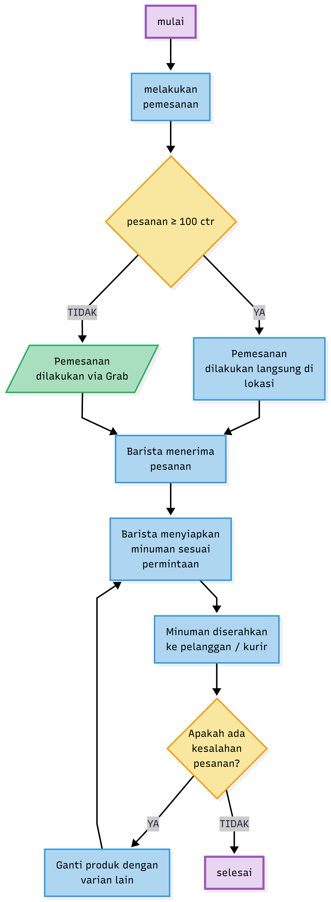
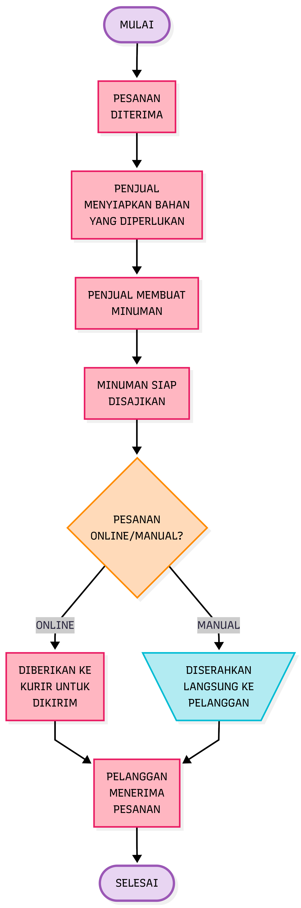
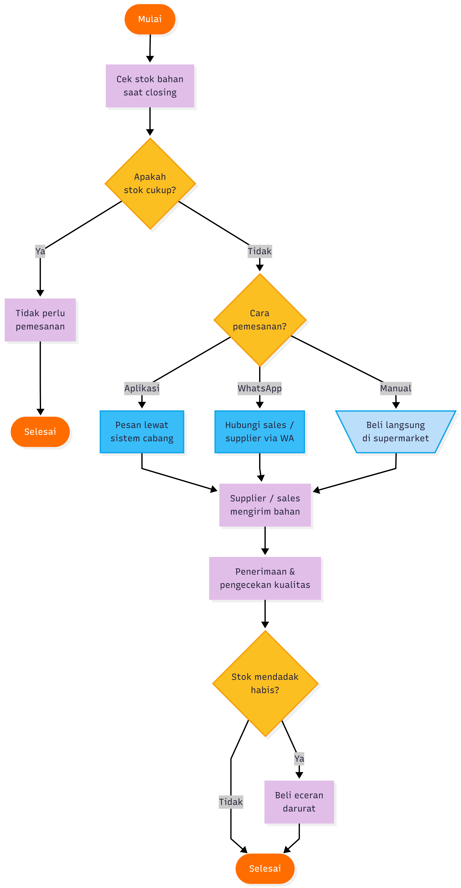
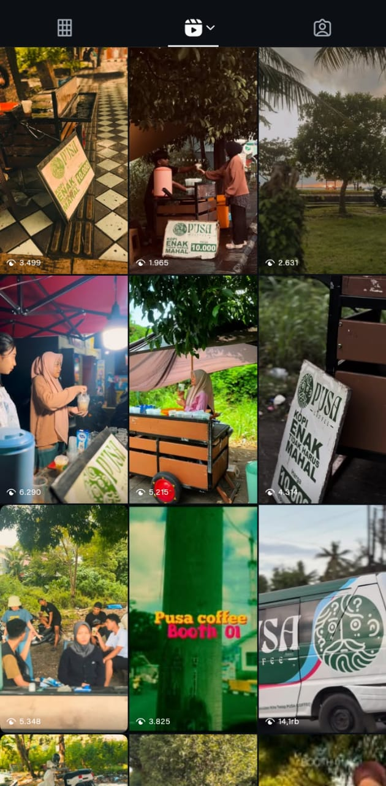
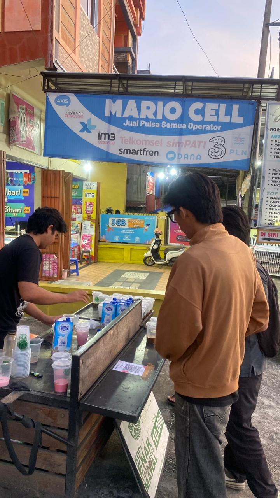
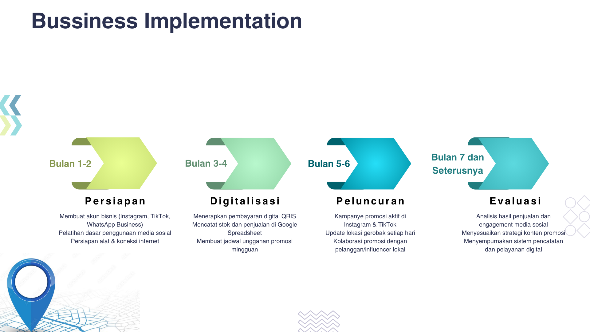

Pendahuluan
Usaha ini berawal dari kecintaan pemilik terhadap dunia kopi dan budaya nongkrong anak muda. Terinspirasi dari semangat untuk menghadirkan tempat berkumpul yang sederhana namun bermakna, Pusa Coffee lahir sebagai wadah bagi siapa saja yang ingin menikmati kopi lokal dengan suasana santai dan harga terjangkau. Melalui tren kopi keliling ini, menuntut pelaku usaha untuk melakukan inovasi-inovasi baru dalam usaha mereka agar tetap relevan. Salah satunya Pusa coffee, sebuah usaha kopi keliling yang mulai ramai belakangan ini. Terutama di kalangan gen z yang menjadikan kopi sebagai bagian dari gaya hidup
Didirikan pada tanggal 29 Desember 2024 yang berlokasi di jalan Poros Pinrang – Parepare, Pusa Coffee hadir dengan konsep kopi keliling yang menyajikan beragam minuman kopi dengan cita rasa khas dan harga bersahabat. Melalui konsep ini, Pusa Coffee ingin mendekatkan pengalaman ngopi langsung ke Masyarakat dari kawasan perumahan, taman kota, hingga acara komunitas.
Analisis Proses Bisnis Pusa Coffe
Dalam menjalankan usahanya, Pusa Coffee menerapkan sistem pemesanan yang fleksibel dengan dua cara, yaitu manual dan online. Pelanggan umumnya memesan langsung di lokasi booth yang tersedia, sedangkan layanan online tersedia dengan jumlah minimal 100 cup yang akan diantarkan ke tempat pelanggan. Sejauh ini, kesalahan pesanan jarang terjadi, dan jika ada, biasanya hanya satu cup yang segera diganti dengan varian lain sesuai kesepakatan. Untuk pengantaran, Pusa Coffee belum memiliki layanan antar mandiri dan masih menggunakan jasa kurir. Pemilik juga menyambut setiap keluhan pelanggan dengan terbuka, karena dianggap sebagai masukan berharga untuk memperbaiki kekurangan dan meningkatkan kualitas pelayanan di masa mendatang.
Dalam pengadaan bahan baku, Pusa Coffee memesan melalui aplikasi khusus internal yang hanya dapat diakses oleh cabang. Supplier utama sudah ditentukan dari pusat, sedangkan bahan tambahan seperti susu full cream atau kental manis dibeli sendiri di Parepare. Setiap bahan memiliki supplier berbeda, dengan sistem pemesanan manual maupun lewat WhatsApp, di mana sales biasanya mengantar langsung. Kualitas bahan dijamin oleh penjual, dan jika stok habis mendadak, Pusa Coffee membeli secara eceran meski di atas harga normal. Pengecekan penggunaan dan pengeluaran bahan dilakukan setiap hari saat closing untuk memastikan stok tetap terkendali.
Setelah bahan baku tersedia, Pusa Coffee melanjutkan kegiatan ke tahap produksi dan penyajian. Setiap pesanan yang masuk, baik secara manual maupun online, akan langsung diterima oleh barista untuk dibuat sesuai varian yang diminta pelanggan. Proses pembuatan dilakukan di kedai keliling dengan peralatan sederhana namun higienis. Setelah selesai, minuman disajikan langsung kepada pelanggan atau dikemas untuk dikirim melalui kurir. Dalam tahap ini, kecepatan dan ketelitian menjadi fokus utama agar setiap pesanan sesuai dan pelanggan puas dengan pelayanan yang diberikan.
Flowchart pemesanan
Flowchart ini menggambarkan alur proses pemesanan minuman mulai dari pelanggan melakukan pemesanan hingga pesanan selesai diterima.
Proses diawali dengan mulai, kemudian pelanggan melakukan pemesanan. Setelah itu, sistem melakukan pengecekan jumlah pesanan apakah pesanan ≥ 100 cup (ctr).
Jika TIDAK (pesanan < 100 ctr), maka pemesanan dilakukan melalui aplikasi Grab.
Jika YA (pesanan ≥ 100 ctr), maka pemesanan dilakukan secara langsung di lokasi.
Kedua jalur pemesanan tersebut kemudian bermuara pada proses yang sama, yaitu barista menerima pesanan. Selanjutnya, barista menyiapkan minuman sesuai dengan permintaan pelanggan.
Setelah minuman selesai disiapkan, minuman diserahkan kepada pelanggan atau kurir. Pada tahap ini dilakukan pengecekan ulang dengan pertanyaan apakah terdapat kesalahan pada pesanan.
Jika YA, maka pesanan akan diganti dengan varian lain, lalu kembali ke proses penyiapan minuman.
Jika TIDAK, maka proses dinyatakan selesai.
Flowchart ini memastikan bahwa setiap pesanan diproses sesuai ketentuan jumlah pesanan serta memberikan mekanisme penanganan apabila terjadi kesalahan pada pesanan.
Flowchart Produksi dan Penyajian Minuman
Flowchart ini menggambarkan alur kerja proses pemesanan minuman yang dilakukan oleh penjual hingga pesanan diterima oleh pelanggan.
Proses dimulai dari Mulai, kemudian pesanan diterima oleh penjual. Setelah pesanan diterima, penjual menyiapkan bahan-bahan yang diperlukan sesuai dengan jenis minuman yang dipesan. Selanjutnya, penjual membuat minuman berdasarkan pesanan tersebut hingga minuman siap disajikan.
Setelah minuman siap, dilakukan pengambilan keputusan mengenai jenis pemesanan, apakah pesanan dilakukan secara online atau manual (langsung).
Jika pesanan online, maka minuman diberikan kepada kurir untuk dikirim ke alamat pelanggan.
Jika pesanan manual, maka minuman diserahkan langsung kepada pelanggan di lokasi.
Pada kedua kondisi tersebut, proses berlanjut ke tahap pelanggan menerima pesanan. Setelah pesanan diterima oleh pelanggan, maka proses dinyatakan selesai.
Flowchart ini menunjukkan alur sederhana dan terstruktur dalam proses pelayanan pemesanan minuman, baik untuk pemesanan online maupun manual.
Flowchart Proses Pengadaan Bahan Baku
Flowchart ini menggambarkan alur pengelolaan stok bahan yang dilakukan pada akhir operasional (closing) untuk memastikan ketersediaan bahan tetap mencukupi.
Proses dimulai dari Mulai, kemudian dilakukan pengecekan stok bahan saat closing. Setelah itu, dilakukan keputusan apakah stok bahan masih cukup.
Jika stok cukup, maka tidak perlu dilakukan pemesanan bahan, dan proses langsung selesai.
Jika stok tidak cukup, maka dilanjutkan ke tahap penentuan cara pemesanan bahan.
Terdapat tiga metode pemesanan bahan:
1.Melalui aplikasi/sistem cabang, yaitu dengan memesan bahan lewat sistem internal.
2.Melalui WhatsApp, dengan menghubungi langsung sales atau supplier.
3.Secara manual, yaitu membeli bahan langsung di supermarket.
Setelah pemesanan dilakukan melalui salah satu metode tersebut, supplier atau sales mengirimkan bahan. Bahan yang diterima kemudian melalui tahap penerimaan dan pengecekan kualitas untuk memastikan kesesuaian jumlah dan mutu bahan.
Selanjutnya dilakukan pengecekan kembali dengan keputusan apakah stok mendadak habis:
Jika YA, maka dilakukan pembelian eceran darurat untuk menjaga operasional tetap berjalan.
Jika TIDAK, maka proses dinyatakan selesai.
Flowchart ini menunjukkan sistem pengendalian stok yang fleksibel dan responsif untuk mencegah kekosongan bahan serta menjaga kelancaran operasional usaha.
Analisis Masalah Bisnis
Dalam kegiatan operasionalnya, Pusa Coffee menghadapi beberapa kendala yang memengaruhi kelancaran usaha. Permasalahan utama terletak pada lokasi penjualan yang tidak menetap karena menggunakan gerobak keliling, sehingga pelanggan sering kesulitan menemukan posisi kedai. Selain itu, promosi usaha masih berfokus pada satu platform media sosial, yaitu Instagram, yang membuat jangkauan pemasaran belum maksimal. Dari sisi internal, pencatatan stok dan penjualan masih dilakukan secara manual, sehingga pengawasan bahan baku dan hasil penjualan kurang efisien.
Berdasarkan analisis, akar dari permasalahan tersebut adalah minimnya penerapan teknologi digital dalam sistem operasional dan pemasaran usaha. Tidak adanya sistem informasi lokasi menyebabkan pelanggan sulit mengetahui posisi gerobak secara real time. Selain itu, pencatatan manual membuat data stok dan penjualan sulit dipantau dengan akurat. Teknologi seharusnya dapat menjadi solusi utama untuk masalah ini, misalnya dengan memanfaatkan Google Spreadsheet untuk pencatatan stok dan penjualan secara digital, pembaruan lokasi otomatis di media sosial agar pelanggan mudah menemukan gerobak.
Analisis SWOT
Kekuatan (Strengths)
Kekuatan utama Pusa Coffee terletak pada kualitas produk dan pelayanan yang diberikan. Menu yang paling diminati pelanggan adalah Kopi Susu Pusa sebagai best seller, disusul oleh varian Strawberry dan Cheese yang juga cukup populer. Dari sisi cita rasa, pelanggan sering memberikan komentar positif karena rasa kopinya yang lebih kuat, tekstur creamy yang pas, serta kemasan yang praktis dan mudah dibawa. Selain itu, pelayanan yang ramah turut menjadi nilai tambah yang memperkuat loyalitas pelanggan terhadap Pusa Coffee.
Kelemahan (Weaknesses)
Kelemahan utama dalam operasional Pusa Coffee berasal dari kelalaian manusia (human error), seperti kesalahan takaran atau kopi yang tumpah saat proses penyajian. Meski jarang terjadi, hal ini menunjukkan perlunya peningkatan ketelitian dan pelatihan bagi karyawan agar kualitas produk tetap konsisten.
Peluang (Opportunities)
Peluang besar bagi Pusa Coffee muncul dari pola perilaku pelanggan yang ramai berkunjung pada waktu-waktu tertentu, terutama pada pagi hingga siang hari (sekitar pukul 10.00–13.00). Kondisi ini dapat dimanfaatkan untuk memperkuat strategi promosi, menambah stok, atau mempercepat pelayanan di jam-jam sibuk.
Ancaman (Threats)
Ancaman yang dihadapi Pusa Coffee berasal dari faktor eksternal seperti antrean panjang dan waktu tunggu yang lama, yang dapat membuat sebagian pelanggan membatalkan pesanan. Selain itu, fluktuasi harga bahan baku seperti kopi, susu, dan gula juga berpengaruh terhadap biaya produksi dan margin keuntungan. Kondisi ini menuntut Pusa Coffee untuk lebih adaptif dalam mengelola stok dan menyesuaikan harga jual tanpa mengurangi kualitas produk.

Strategy Development
Strategi Utama: Differentiation (Diferensiasi)
Strategi utama yang dipilih Pusa Coffee adalah differentiation, yaitu menciptakan pengalaman Pelanggan yang unik melalui penerapan teknologi digital untuk memperkuat identitas usaha. Sebagai bisnis kopi keliling, Pusa Coffee memiliki keunggulan tersendiri karena konsepnya yang fleksibel dan dekat dengan masyarakat. Namun, agar tetap kompetitif di era digital, diferensiasi dilakukan melalui peningkatan layanan dan interaksi pelanggan berbasis teknologi
Solusi Digital Yang Diusulkan
Pemanfaatan Media Sosial Secara Aktif (Instagram & TikTok)
Karena promosi Pusa Coffee saat ini baru berfokus di Instagram, langkah pertama adalah memaksimalkan konten promosi digital. Melalui unggahan rutin, update lokasi harian, serta konten kreatif di Instagram dan TikTok, pelanggan akan lebih mudah menemukan lokasi dan tetap terhubung dengan brand.
Sistem Pencatatan Digital Sederhana (Spreadsheet atau Aplikasi Kasir Gratis)
Untuk efisiensi operasional, digunakan sistem pencatatan digital sederhana seperti Google Spreadsheet atau aplikasi kasir gratis. Hal ini membantu pemilik memantau stok bahan baku dan penjualan secara harian tanpa proses manual yang rumit.
Pemanfaatan Google Maps sebagai Penunjang Lokasi Harian
Meskipun tidak memiliki lokasi tetap, Pusa Coffee dapat memanfaatkan tautan Google Maps Live Location yang dibagikan melalui bio Instagram/Tiktok atau WhatsApp Business. Dengan cara ini, pelanggan dapat mengetahui posisi gerobak secara real time tanpa perlu bertanya langsung.
Digital Business Activity Value
dari sisi aktivitas nyata di proses bisnis, Pusa Coffee aktif menggunakan media sosial Instagram dan TikTok sebagai sarana promosi dan komunikasi dengan pelanggan. Setiap hari, tim rutin memperbarui lokasi gerobak, membagikan konten seputar menu, dan menjalin interaksi langsung dengan pelanggan. Selain itu, Pusa Coffee juga telah menerapkan pembayaran digital melalui QRIS, sehingga pelanggan dapat bertransaksi dengan lebih cepat dan praktis. Untuk mendukung kegiatan operasional, pencatatan stok dan penjualan dilakukan secara digital sederhana menggunakan spreadsheet agar data lebih rapi dan mudah dipantau.
aktivitas digital tersebut memberikan nilai tambah yang signifikan bagi usaha. Melalui promosi digital, jangkauan pasar menjadi lebih luas tanpa perlu biaya besar. Penggunaan QRIS mempermudah pelanggan dalam bertransaksi sekaligus mempercepat pelayanan. Pencatatan digital membantu pemilik memantau hasil penjualan secara lebih efisien dan meminimalkan kesalahan manual.
dari sisi perubahan dan perbaikan proses bisnis melalui teknologi, digitalisasi membuat kegiatan Pusa Coffee menjadi lebih modern dan profesional. Jika sebelumnya promosi dan transaksi dilakukan secara konvensional, kini pelanggan dapat menemukan informasi, lokasi, dan melakukan pembayaran secara digital. Langkah ini menjadikan Pusa Coffee lebih adaptif terhadap perkembangan zaman serta meningkatkan kenyamanan dan kepuasan pelanggan.
Business Implementation (Implementasi)
Roadmap implementasi teknologi di Pusa Coffee dilakukan secara bertahap agar setiap proses digitalisasi dapat berjalan efektif dan sesuai dengan kebutuhan bisnis.
Fase 1: Persiapan
Pada tahap awal, dilakukan evaluasi kebutuhan usaha dan kesiapan sumber daya manusia. Pemilik usaha mulai mengenalkan dasar penggunaan media sosial kepada karyawan serta memastikan perangkat pendukung seperti smartphone dan koneksi internet siap digunakan. Selain itu, dilakukan pembuatan akun bisnis resmi Pusa Coffee di platform digital (Instagram, TikTok, dan WhatsApp Business).
Fase 2: Digitalisasi
Tahap ini berfokus pada penerapan teknologi dalam operasional harian. Pusa Coffee mulai menerapkan pembayaran digital QRIS dan melakukan pencatatan stok serta penjualan menggunakan sistem digital sederhana seperti Google Spreadsheet. Aktivitas promosi mulai dikembangkan dengan jadwal unggahan rutin dan konten interaktif di media sosial.
Fase 3: Peluncuran
Pada fase ini, kampanye pemasaran digital dilakukan secara lebih aktif. Pusa Coffee secara konsisten mengunggah konten promosi, testimoni pelanggan, dan update lokasi gerobak setiap hari di media sosial. Selain itu, pemilik usaha mulai menjalin kolaborasi kecil dengan pelanggan atau influencer lokal untuk memperluas jangkauan promosi.
Fase 4: Evaluasi

Setelah proses digitalisasi berjalan, dilakukan evaluasi terhadap hasil promosi dan transaksi digital. Data dari penjualan dan engagement media sosial dianalisis untuk mengetahui efektivitas strategi yang digunakan. Berdasarkan masukan pelanggan, Pusa Coffee akan menyesuaikan jadwal promosi, jenis konten, serta mengevaluasi penggunaan sistem pencatatan digital agar lebih efisien.